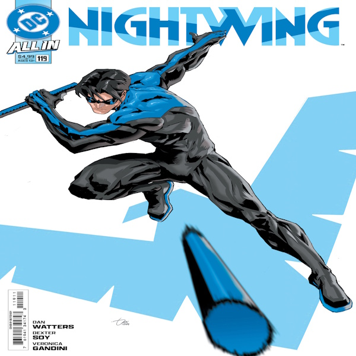

Welcome to My Batcave(well it's actually my site but that doesnt fit the theme)
Purpose of this site
This site strives to prsent one of my biggest hobbies, Comic Books. I want this to be a place that provides the History of DC comics mainly Batman, Archiving Older content/panels/and comics, Providing modern updates on Modern Batman, as well as Providing resources on Comics, how to start one, how to improve on writing and drawing for comics, as well as researching DC comics and it's universe.
You'll find a lot of things on this site, though right now it just has the barebones as it's a work in progess. We have the about page where you'll learn who I am and more information about myself. There's also the contacts page where if you have any suggestions to give, question, or just want to chat you'll find my contact information there. I've got big plans for this site, which honestly I might actually finish a site and not leave it in development. But anywyas I plan to add more pages where you'll actually get to see more content on what this site's supposed to be about :D!
